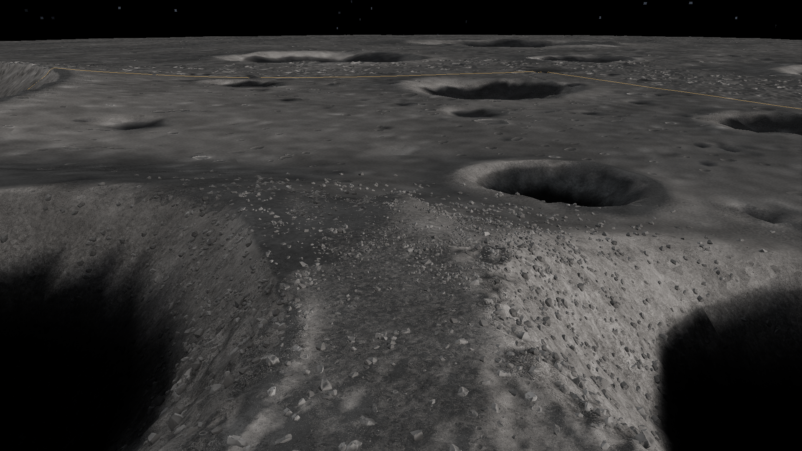
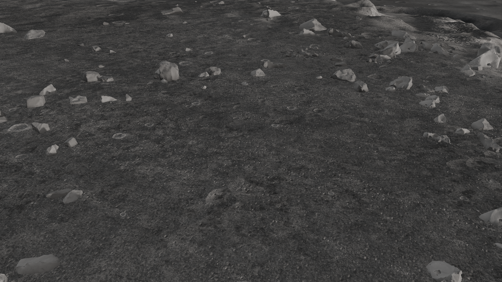
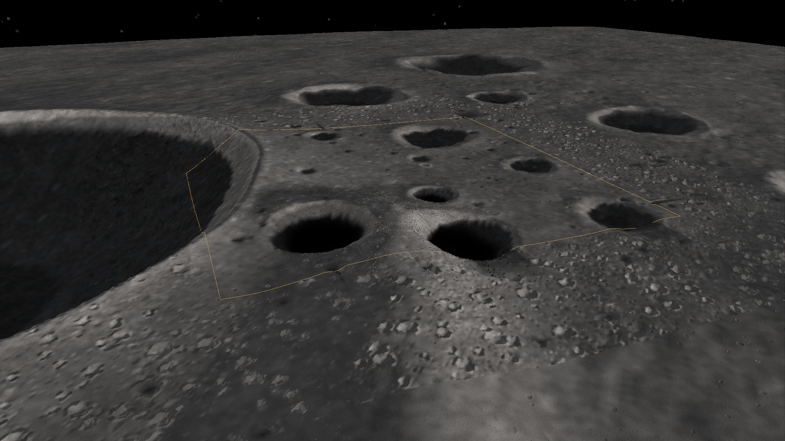

Shackleton ridge
Sunlit polar ridges and shadowed crater basins. Measured large-scale relief supports authored terraces, cold traps and construction sites.
Measured and authored
The regional anchor is near 89.403°S, 207.851°E, placing the Connecting Ridge C1 neighbourhood in the play area. The broad polar geography comes from LOLA. Local cold traps, construction terraces, small craters and material/debris dressing are authored. This archive uses the preserved LOLA-backed region; the separate high-resolution DTM experiment is not represented as its data source.
The source is the 118 m LRO LOLA DEM (NASA/GSFC; USGS Astrogeology). Its 62.5 m local grid is resampling, not new measurement detail. The original multi-level regional payload is included with sanitized provenance.
Native game views






Capture hashes and stage · The sidecars preserve camera, terrain counters and map hashes. They describe these archived views, not current performance.
Source heightmap and hillshade

Download original regional elevation payload · Heightfield format · Moon source overview